걸어 두는 곳마다,
꽃과 향이 머물러요
손으로 꽃을 얹은 보태니컬 왁스사셰
4개 컬렉션, 16가지 향
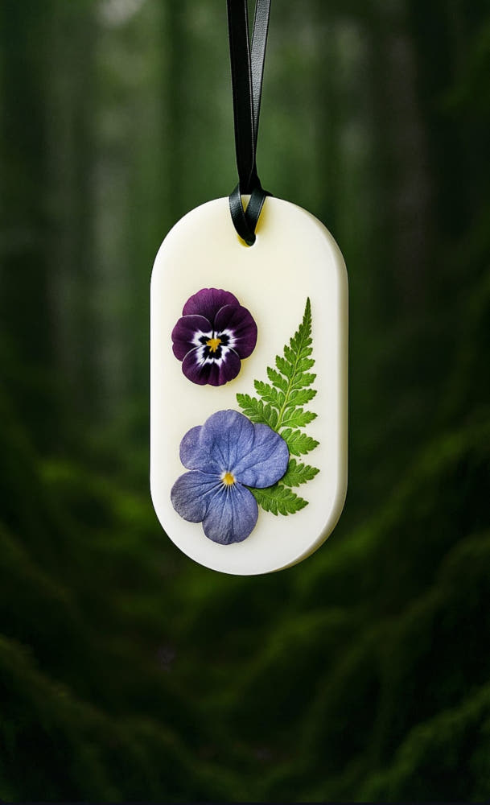
이런 점, 아쉬웠죠?
그래서 준비했어요꽃을 품은 왁스사셰
꽃을 품은
왁스 한 장으로
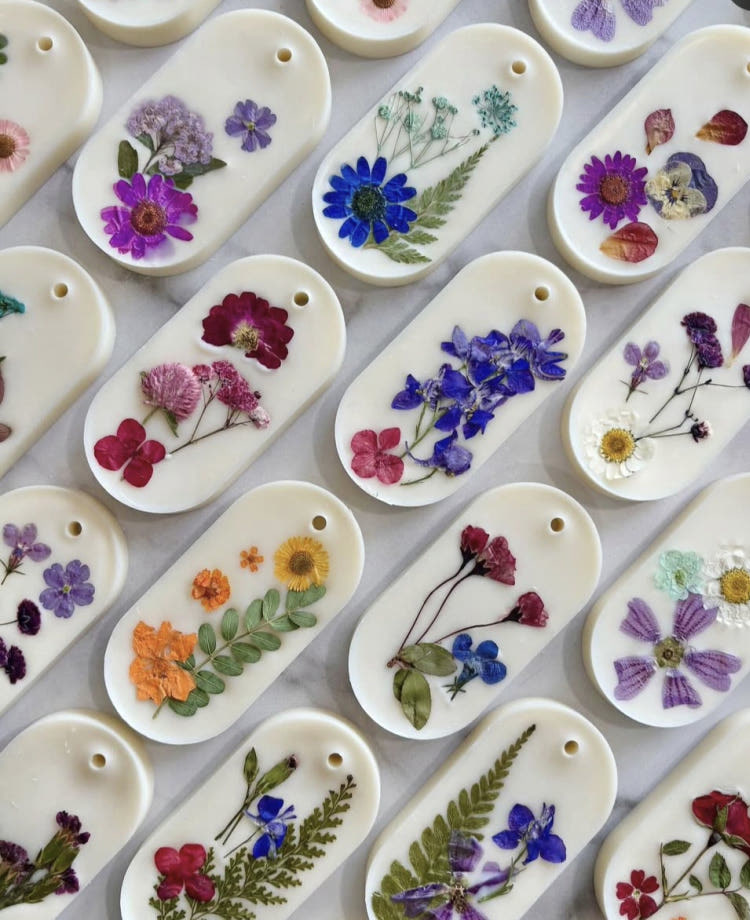
향을 머금은 소이 왁스에
말린 꽃을 얹어 굳힌 방향제예요.
- 01식물성 재료로콩 왁스와 천연 에센셜 오일
- 02그 자체로 소품걸어 두면 작은 꽃 액자처럼
- 03한 장으로 어디든옷장, 서랍, 차 안, 방문까지
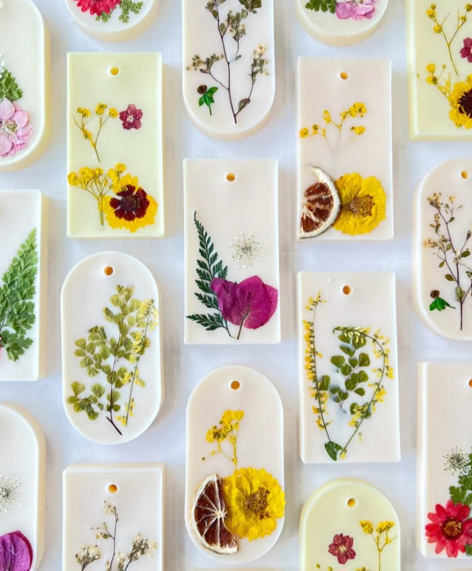
같은 디자인이
하나도 없어요
꽃과 식물, 허브를 손으로 배치해 만들어요.
주문할 때마다 다른 사셰가 찾아가요.
시즌마다 다른 꽃꽃 종류와 디자인이 바뀌어요
한 장 한 장 수작업꽃잎 하나까지 손으로
콩에서 얻은
100% 소이 왁스
콩에서 추출한 100% 식물성 왁스예요.
천천히 녹는 소이 왁스라 더 오래 써요.
파라핀 왁스보다 약 25% 더 오래
브랜드 표기 기준(파라핀 왁스 대비)
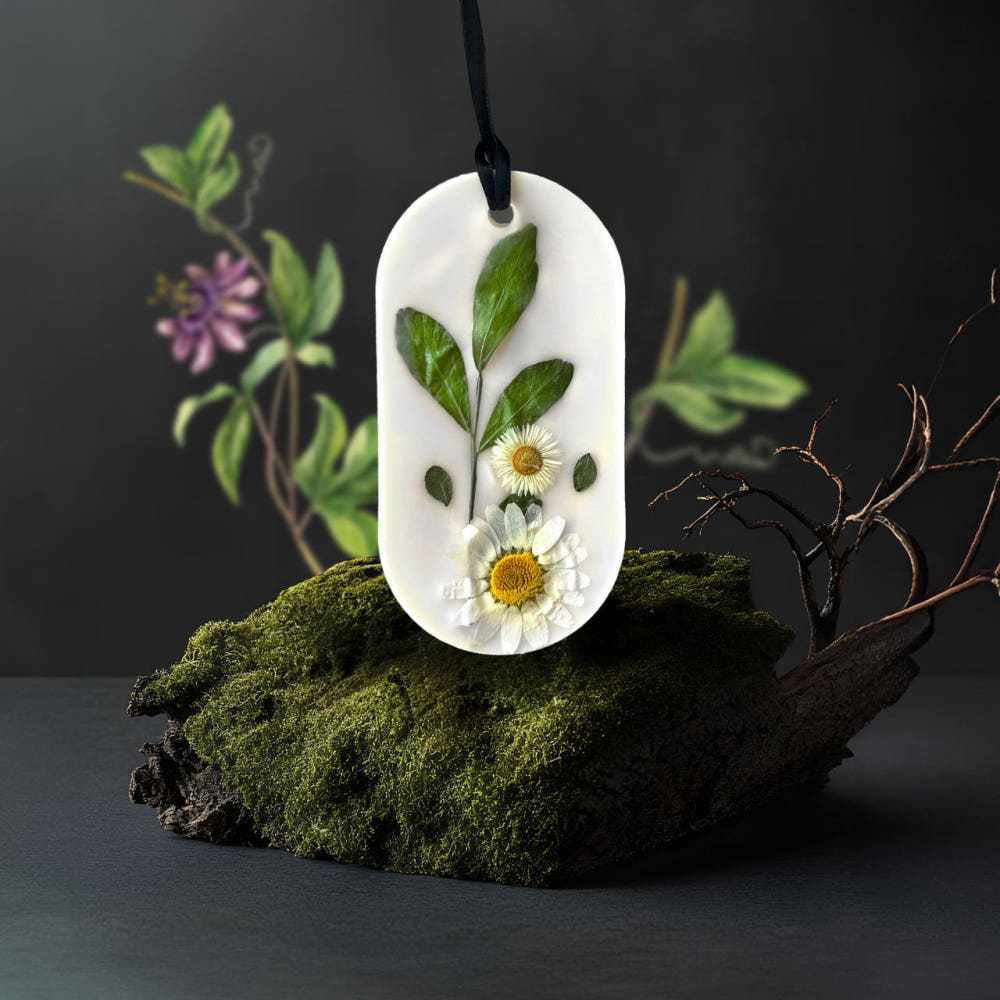
가져온 재료로
깨끗하게 만들어요
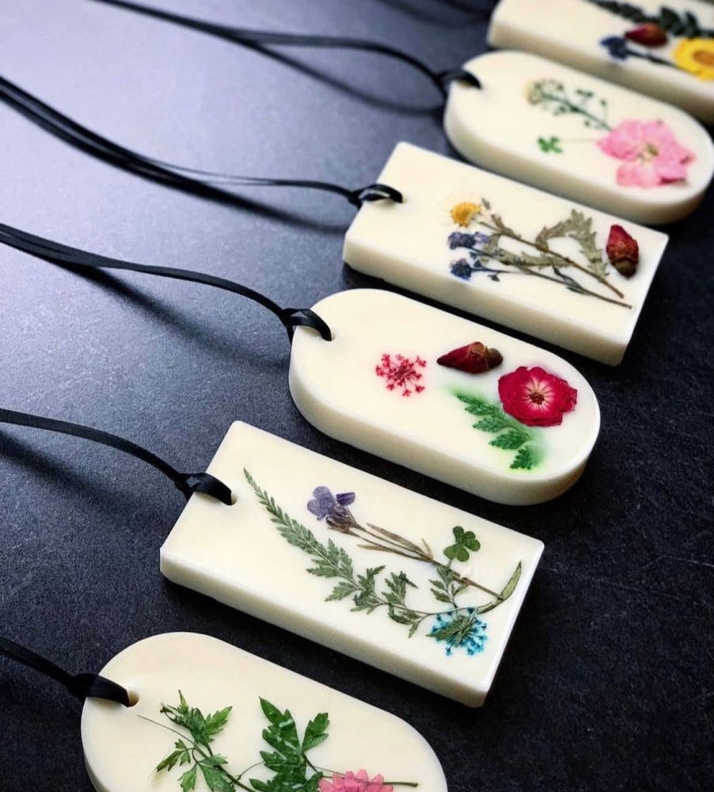
동물 실험을 하지 않고,
IFRA·RIFM 기준보다 까다로운
자체 기준으로 만들어요.
나만의 향,
16가지
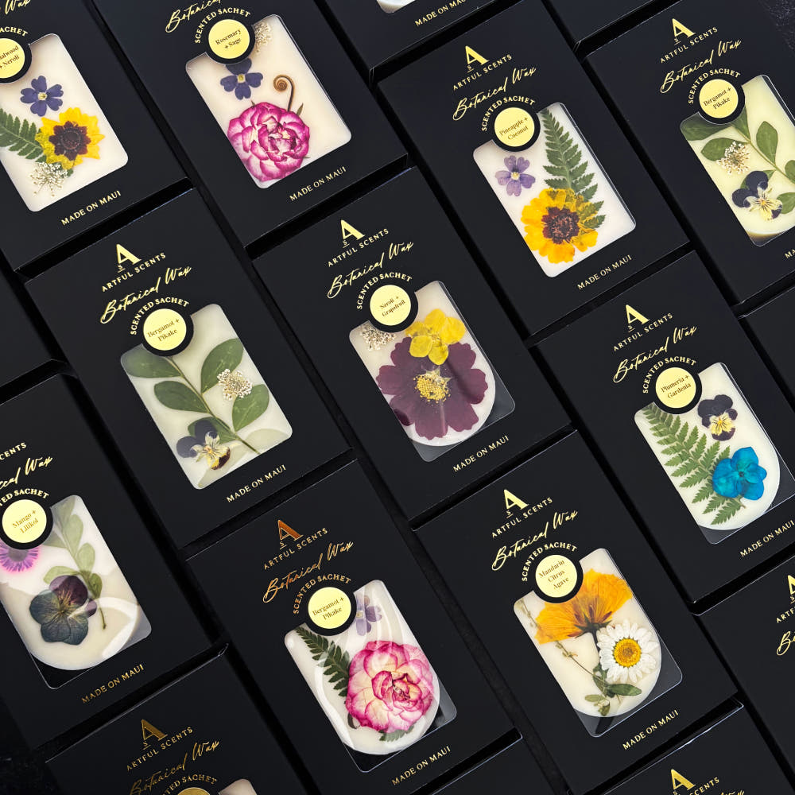
컬렉션마다 네 가지 향이 있어요.
내 공간에 맞는 향을 골라 보세요.
16가지 향,
한눈에 보기
LUXE NOIR럭스 누아르
- 피카케 + 코코넛 밀크
- 만다린 + 시트러스 아가베
- 밤부 + 큐컴버 미스트대나무 + 오이
- 씨쏠트 + 자스민 플라워
BOHEMIAN보헤미안
- 씨쏠트 + 오키드바다소금 + 난초
- 샌달우드 + 네롤리
- 로즈마리 + 세이지
- 민트 + 유칼립투스
ISLAND아일랜드
- 라하이나파인애플 + 코코넛
- 마우이 누이플루메리아 + 가드니아
- 아일랜드히비스커스 + 튜베로즈
- 브리즈망고 + 릴리코이
CLASSIC클래식
- 리플렉트오키드 + 플럼
- 썬라이즈네롤리 + 그레이프프룻
- 릴렉스라벤더 + 카모마일
- 에너자이즈베르가못 + 피카케
어디든 걸고,
넣고, 두세요
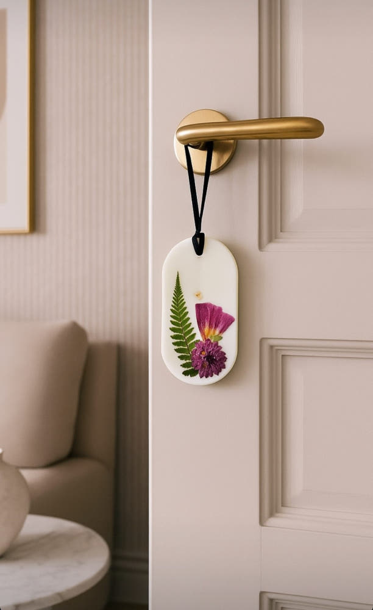
방문 손잡이에
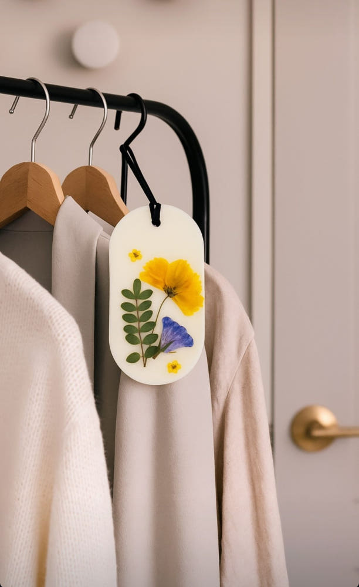
옷걸이 봉에
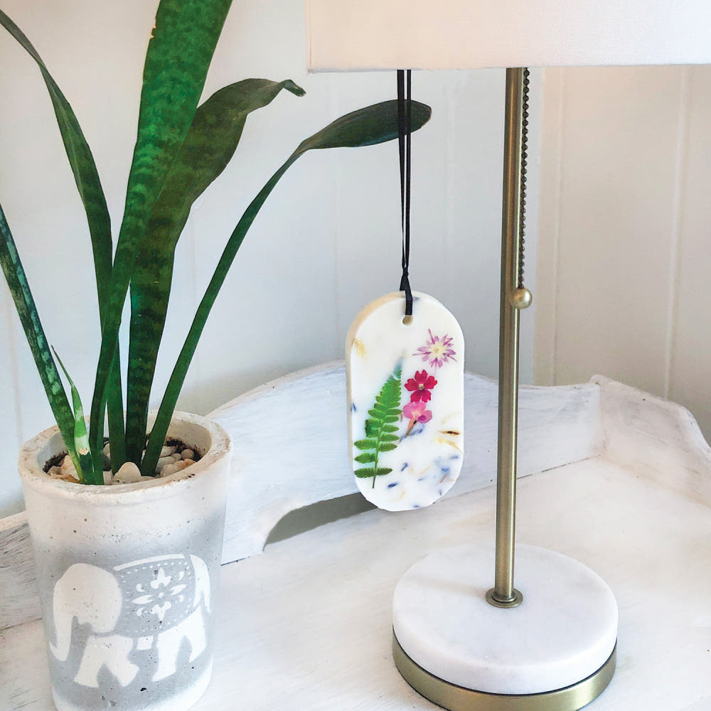
스탠드와 선반에, 인테리어 소품처럼
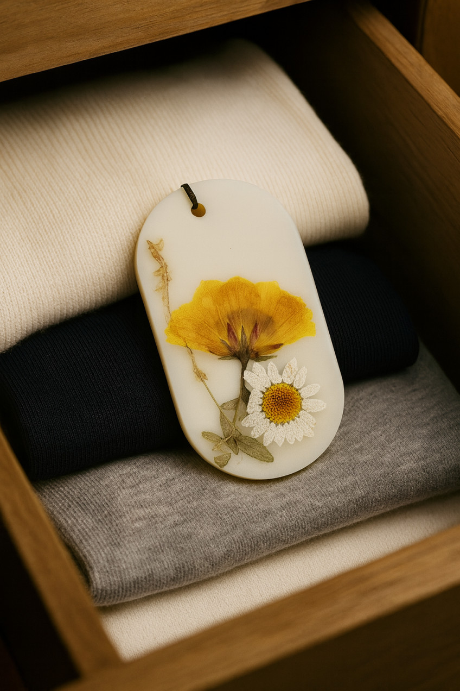
꺼내 입을 때마다
옷에서 향이
개어 둔 옷 사이에 넣어 두면
옷에 향이 은은하게 배어요.
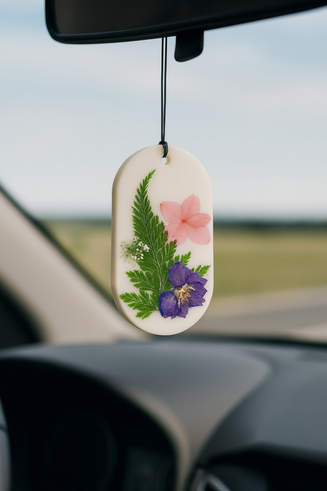
차 안 가득,
기분 전환
운전하는 동안 향긋한 향이
차 안을 채워요.
받는 순간,
그대로 선물
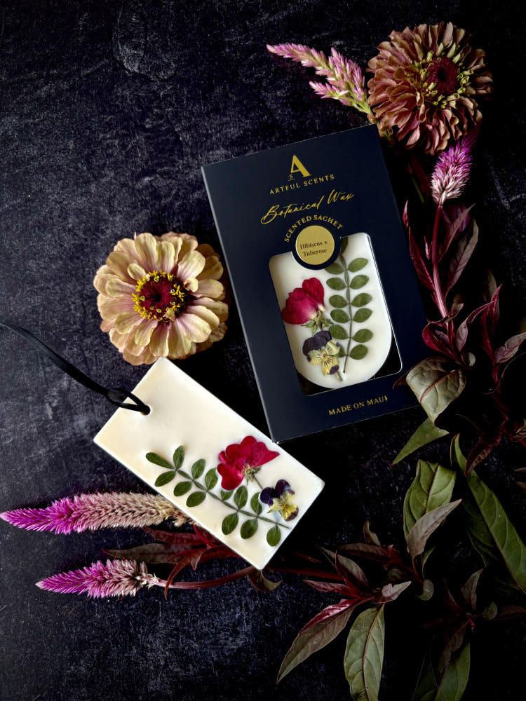
창으로 보이는 꽃
걸 수 있는 리본
부드러운 촉감의 블랙 박스에 담겨 와요.
집들이, 작은 선물로 좋아요.
사기 전에
많이 물어보세요
옷장, 서랍, 욕실, 차처럼 닫힌 작은 공간이나
선반 위에 두면 향이 오래 머물러요.
하나씩 손으로 만들고 시즌마다 꽃이 바뀌어,
받을 때마다 디자인이 달라요.
왁스로 만들어 고온과 직사광선은 피해 주세요.
여름에는 서늘한 곳에 두면 좋아요.
네. 꽃이 보이도록 걸어 두면
공간을 꾸미는 소품이 돼요.
상품 정보 제공 고시
| 제품명 | 보태니컬 왁스사셰 4색 컬렉션 16가지 향 |
|---|---|
| 중량 | 102.6g |
| 형태 · 소재 | 왁스타블렛 · 소이왁스 |
| 브랜드 | 아트풀센츠코리아 |
| 제조사 | 아트풀센츠사 |
| 원산지 | 미국 |
| 안전확인 신고 | HB25-12-0115 |
| 생활화학 신고 | HB25-12-0388 |
보관 · 배송
직사광선을 피해 서늘하고 건조한 곳에 두세요.
천에 바로 닿지 않게 티슈로 감싸 주세요.
보통 주문 후 1~3일 안에 보내 드려요.
세상에 하나뿐인
향기로운 작품
꽃과 향을 손으로 담아,
당신의 공간에 보내 드려요.